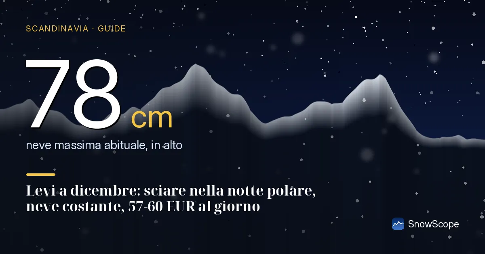

Levi a dicembre: sciare nella notte polare, neve costante, 57-60 EUR al giorno
La neve di dicembre a Levi è effettivamente migliorata negli ultimi decenni, controtendenza rispetto a molte stazioni alpine. Gli ultimi 15 inverni mostrano che ogni singola settimana natalizia ha avuto almeno 30 cm al suolo, rispetto al 87% nei primi 15 inverni dei nostri dati. Pianifica una visita tra metà dicembre e Capodanno e avrai buone probabilità di neve affidabile, fredda e battuta.
Le previsioni neve in tempo reale per Levi nell'app SnowScopeAltezza neve, allerte powder e mappa 3D, gratis.
Perché Levi funziona a dicembre
Levi è una montagna tondeggiante della Lapponia: una collina bassa che sale solo 333 m dalla base alla vetta. Poiché è liscia e non molto alta, i nostri 46 inverni di storia neve la trattano come una sola zona. Il dato chiave è la consistenza: in nessuno di questi inverni il suolo era nudo il 15 dicembre, e la profondità della neve sulla collina cambia poco con l'altitudine.
Questa consistenza viene dalla geografia della Lapponia. Molto a nord, un inverno più mite non significa suolo nudo, significa neve più umida. Levi si trova a 67,8°N, dove anche un dicembre mite rimane abbastanza freddo da costruire una base e mantenerla.


Tre settimane, tre probabilità
Inizio dicembre (1-7 dic) è una scommessa: solo il 57% degli inverni ha avuto 30 cm o più entro allora. Il primo giorno tipico per trovare 30 cm è il 27 novembre, ma varia. Se vai nella prima settimana, controlla attentamente le condizioni e preparati alla pazienza.
Metà dicembre (15-21 dic) è più sicuro. La percentuale di inverni con 30 cm sale all'83%. In un tipico 15 dicembre, SnowScope mostra 38 cm. In un anno scarso (1 su 10), aspettati 26 cm; in un anno profondo, 52 cm. Questo intervallo ristretto è tipico per le colline: raramente hanno neve da polvere, raramente rimangono nude.
Settimana natalizia: il bastione della stagione
La settimana natalizia (22-28 dic) è la settimana migliore di dicembre a Levi. Negli ultimi 15 inverni, ogni singolo ha avuto 30 cm o più. Nel complesso, il 91% di tutti i 46 inverni ha raggiunto quel limite. Un tipico 24 dicembre ha 43 cm al suolo.
Non venire a Levi per la neve fresca. Solo il 2% delle settimane natalizie ha 60 cm o più. Quello che ottieni invece è neve fredda, stabile e battuta che dura. L'inverno scorso ha consegnato 55 cm il 24 dicembre.
Notte polare e luce
Dicembre a Levi è anche l'inizio della notte polare. A metà dicembre il sole si alza appena, e per parte del mese non supera l'orizzonte del tutto. La luce diventa blu e rosa per poche ore nel pomeriggio, e molto sci avviene al crepuscolo o al buio.
Porta una buona lampada frontale per le camminate tra le piste, guanti caldi e protezione per il viso. Il freddo è secco e penetrante. Per molti sciatori, questa luce strana e il silenzio delle colline rendono Levi indimenticabile a dicembre.
Come la stagione è cambiata
Levi è inusuale in questa serie: la sua neve di dicembre è cresciuta, non diminuita. Nei primi 15 inverni (1980-81 a 1994-95), la media di dicembre era 41 cm. Negli ultimi 15 inverni (2011-12 a 2025-26), è salita a 45 cm. Il miglioramento è più evidente a Natale: l'87% delle settimane aveva 30 cm o più nel periodo iniziale; ora è il 100%.
Questo trend riflette come le montagne molto a nord rispondono diversamente dai cambiamenti climatici rispetto alle Alpi. Più caldo non significa nudo; può significare neve più umida che continua ad accumularsi.
Costo e tempistica
Un abbonamento giornaliero costa EUR 60 alla cassa della stazione o EUR 57 se prenoti online almeno 14 giorni in anticipo. Questa tariffa va dall'1 dicembre al 2 maggio ed è uno dei prezzi fissi più bassi di questa serie. Nearby Ylläs costa EUR 60 normalmente e EUR 55,50 in bassa stagione (prima dell'11 dicembre), e vende un abbonamento di 7 giorni per EUR 254,50 in quella stessa finestra.
Per una breve visita a metà dicembre o nella settimana natalizia, la tariffa giornaliera di Levi è competitiva. Per un'intera settimana in inizio dicembre, l'abbonamento di 7 giorni in bassa stagione di Ylläs potrebbe essere più economico. In ogni caso, prenota impianti e alloggio con largo anticipo: dicembre si riempie velocemente in Lapponia.
Consigli per sciatori
- Salta la prima settimana di dicembre a meno che non ti piace il rischio: solo il 57% degli inverni ha 30 cm entro allora. Metà dicembre e la settimana natalizia sono scommesse molto più sicure.
- Prenota il tuo alloggio e gli impianti con anticipo. Prenota online per EUR 57 invece di EUR 60 al giorno se pianifichi in anticipo.
- Porta equipaggiamento per il freddo: una lampada frontale per il crepuscolo polare, guanti spessi, passamontagna e crema solare ad alto SPF per l'abbagliamento della neve.
- Se ti avventuri fuori pista sulla collina, controlla il bollettino di valanghe e meteo locale prima di lasciare le piste battute.
- L'inverno scorso (2025-26) ha avuto 55 cm il 24 dicembre. Anche in un anno scarso (1 su 10), aspettati 26 cm il 15 dicembre, sufficiente per le piste battute.
Su questi numeri
Le altezze neve delle località sono la neve più alta sui pendii superiori alla data indicata; sono stime per un'area, non una misura in un punto. Le previsioni possono cambiare. Leggi sempre il bollettino valanghe ufficiale prima del fuoripista.
Bollettini valanghe ufficiali: EAWS – European Avalanche Warning Services
Cita questo articolo
Per ricerca, didattica o stampa: numeri e grafici sono liberamente riutilizzabili con licenza CC BY 4.0 citando così.
SnowScope (2026), Levi a dicembre: sciare nella notte polare, neve costante, 57-60 EUR al giorno, https://snowscope.app/blog/it/2026/11/levi-december-skiing-polar-night-snow-price.html, consultato il 2026-11-14
SnowScope (Atlas Labs). (2026, November 14). Levi a dicembre: sciare nella notte polare, neve costante, 57-60 EUR al giorno. SnowScope snow reports. https://snowscope.app/blog/it/2026/11/levi-december-skiing-polar-night-snow-price.html
BibTeX
@misc{snowscope2026levidecemberskiingpolarn,
author = {{SnowScope (Atlas Labs)}},
title = {Levi a dicembre: sciare nella notte polare, neve costante, 57-60 EUR al giorno},
year = {2026},
month = nov,
howpublished = {\url{https://snowscope.app/blog/it/2026/11/levi-december-skiing-polar-night-snow-price.html}},
note = {Published 2026-11-14 13:29 UTC; accessed 2026-11-14}
}· CC BY 4.0 · Metodi, dati e strumenti →
Levi: neve e temperatura per quota, quest'inverno vs lo scorso (strumenti) →
Segui Levi
Gratis: un messaggio quando arriva la neve e il meteo ogni mattina.